Aanmelden
Om toegang te krijgen tot Gelinkt Notuleren, moet u als gebruiker gekend zijn bij het gebruikersbeheer Gelinkt Notuleren. De lokale beheerder die in elk bestuur aanwezig is kan u hier toegang tot geven. Meestal is dit de secretaris/algemeen directeur, griffier of iemand die door de organisatie werd aangeduid. U gaat dus best bij hen ten rade als u niet weet wie uw lokale beheerder is. Meer informatie over gebruikersbeheer.
Surf naar https://gelinkt-notuleren.vlaanderen.be/login om veilig naar de applicatie te surfen.
Browser: Chrome, of Firefox
Om optimaal gebruik te maken van de applicatie, gebruikt u best Chrome of Firefox.
Het kan echter dat bepaalde functionaliteiten niet (volledig) werken zoals het hoort. Mocht u dit opmerken, kunt u ons dit altijd laten weten via GelinktNotuleren@vlaanderen.be.
Voorpagina
Aanmelden verloopt via het gekende gebruikersbeheer Vlaanderen. Klik op de blauwe knop "meld u aan" om verder te gaan.

Pop-up
Vervolgens verschijnt er een pop-up, die u enkele veilige opties voorstelt om u mee aan te melden.
Verschijnt de pop-up niet?
Zorg dat de instellingen van uw browser goed staan.
Krijgt u geen toegang tot de applicatie?
Ga naar gebruikersbeheer voor meer informatie.
Documentoverzicht
Eens u aangemeld bent, krijgt u een overzicht van alle documenten. U zal nog geen documenten te zien krijgen.
U komt op het tabblad "actieve documenten" terecht. Daar vindt u al de notulen die in voorbereiding of in behandeling zijn.

Eens een document wordt opgeslagen als concept, ziet u deze verschijnen in het overzicht.

Concepten kunnen altijd naar de prullenbak verplaatst worden. U kan documenten die in behandeling zijn ook naar de prullenbak verplaatsen, maar reeds gepubliceerde documenten zullen blijven bestaan op publicatie.gelinkt-notuleren.vlaanderen.be
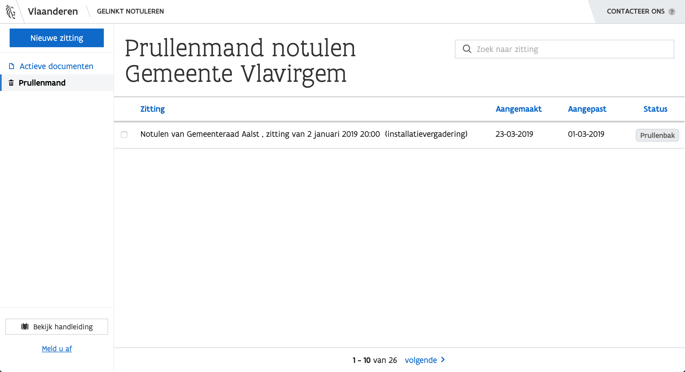
Documenten in de prullenbak kunnen steeds terug naar het overzicht verplaatst worden.
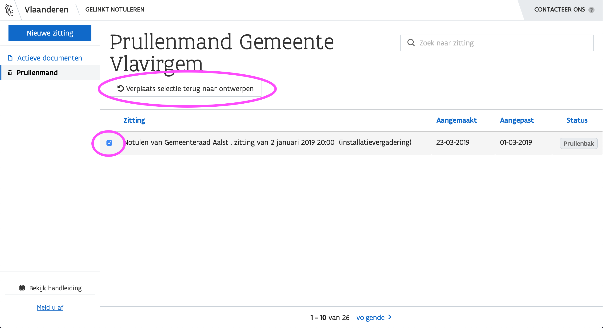
Notuleren
0. Informatie automatisch laten doorstromen
De tekstverwerker van gelinkt notuleren werkt met verschillende invulvelden of annotaties in de voorgemaakte sjablonen. Indien u deze invulvelden correct invult, wordt de informatie automatisch doorgestuurd naar de relevante plekken zoals het loket. U kan de invulvelden op elk moment onthullen met de knop Toon invulvelden.
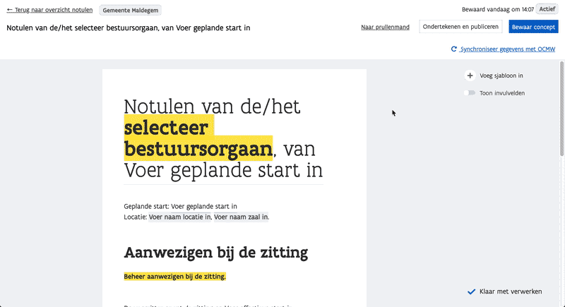
Indien de informatie die u wil laten doorstromen niet in een invulveld veld staat, kan de tesktverwerker dit niet oppikken en laten doorstromen.
Enkele voorbeelden van invulvelden met annotaties
Het bestuursorgaan en de datum, in de titel die zelf ook geannoteerd is.

Mandatarissen, genotuleerd in verschillende vormen: aanwezig of afwezig, het mandaat, aangesteld of ontslagen:
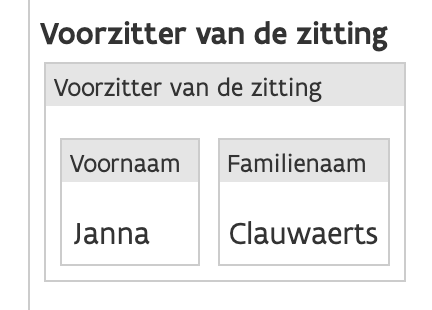
De titel en de korte beschrijving van het besluit:

De artikels in de beslissende gedeeltes:

1. Een nieuwe zitting starten
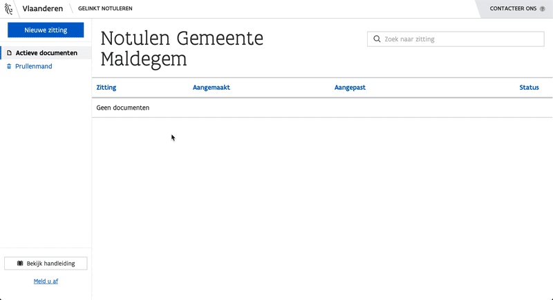
In het overzicht kan u met de knop bovenaan links een nieuwe zitting starten.
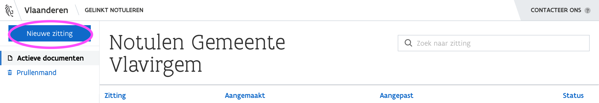
Deze actie opent de tekstverwerker, waar u aan de slag kan met het maken van uw notulen. Bewaar uw document regelmatig om uw notulen niet verloren te laten gaan.
Geef de tekstverwerker de tijd om steeds de omgeving te laden, voor u begint met bewerken. De tekstverwerker interpreteert telkens de omgeving om nieuwe informatie op te halen zoals bijvoorbeeld de organen van het bestuur waarvoor u aangemeld bent en de mandatarissen die aan het orgaan verbonden zijn.
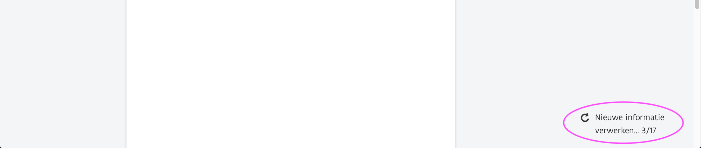
2. Een generiek sjabloon voor een zitting invoegen
Eens de tekstverwerker geladen is, moedigen wij u aan om een sjabloon te kiezen.
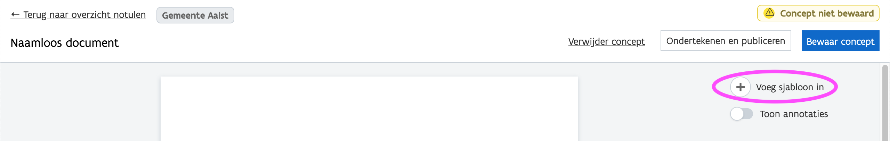
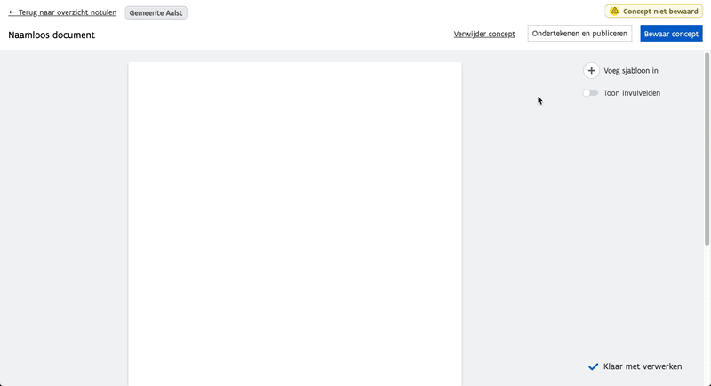
De volgende sjablonen zijn momenteel beschikbaar:
- Zitting (generiek)
Dit is het sjabloon dat u het meest zal gebruiken, en ondersteunt zowel de nieuwe als de oude stijl.
- Installatievergadering met politieraad, klassieke stijl
(niet meer van toepassing)
Dit is een sjabloon voor de gemeenteraad
- Installatievergadering met politieraad, nieuwe stijl
(niet meer van toepassing)
Dit is een sjabloon voor de gemeenteraad
- Installatievergadering zonder politieraad, klassieke stijl
(niet meer van toepassing)
Dit is een sjabloon voor de gemeenteraad
- Installatievergadering zonder politieraad, nieuwe stijl
(niet meer van toepassing)
Dit is een sjabloon voor de gemeenteraad
- Eerste vergadering OCMW-raad, klassieke stijl
(niet meer van toepassing)
Dit is een sjabloon voor de OCMW-raad
- Eerste vergadering OCMW-raad; nieuwe stijl
(niet meer van toepassing)
Dit is een sjabloon voor de OCMW-raad
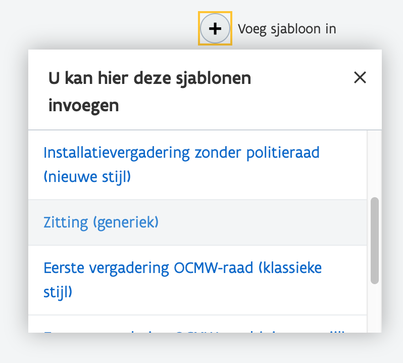
Waarom een sjabloon kiezen
De sjablonen zijn verrijkt met slimme links, die ervoor gaan zorgen dat de informatie die u ingeeft telkens op de juiste manier en naar de juiste plek doorstroomt bij publicatie.
Sjablonen zijn er om u te helpen, maar u heeft het laatste woord
De sjablonen die we aanbieden zorgen ervoor dat de gelinkte informatie die u ingeeft op een correcte manier naar de juiste plaatsen doorstroomt. Ze zijn er ook om u te inspireren bij het vormen van uw besluiten.
U bent vrij om tekst aan te passen, maar zorg ervoor dat de structuur van het document telkens gerespecteerd blijft. U kan nagaan of dit in orde is door op Toon invulvelden te klikken.
3. Een generiek sjabloon invullen
Geef de tekstverwerker de tijd om deze nieuwe informatie in te laden en te interpreteren. Daarna kan u aan de slag.
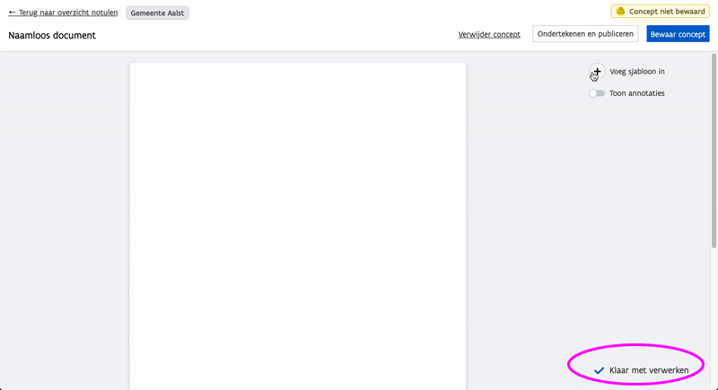
Gele en grijze tekstblokken
In het sjabloon verschijnen er gele en grijze tekstblokken die ingevuld dienen te worden. Zet de switch "Toon invulvelden" aan om zeker te zijn dat u de juiste informatie in de juiste blok zet.
Indien u op een gele tekstblok klikt, krijgt u suggesties om in te vullen. Ga naar gebruik maken van de slimme functionaliteiten om te ontdekken hoe de verschillende functionaliteiten werken.
Opgelet: selecteer steeds het juiste bestuursorgaan met de juiste bestuursperiode. Op deze manier kan de tekstverwerker de juiste data voor u verwerken.
In de grijze tekstblokken kan u manueel informatie invoeren met uw toetsenbord.
De achtergrondkleur wordt niet mee gepubliceerd in uw notulen, die wordt wit gepubliceerd, dus u hoeft u geen zorgen te maken over de grijze achtergrondkleur. De grijze blok wegdoen heeft ook geen invloed, maar zorg dat de omringende blokken met informatie niet verwijdert.
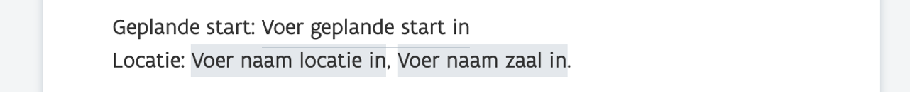
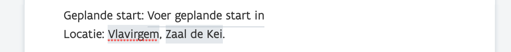
Aan de slag
We moedigen u aan om te oefenen met de editor. Start gerust enkele nieuwe zittingen. Zolang u niet publiceert, komt de informatie niet online te staan. Concepten kan u steeds verwijderen.
Opslaan en later verder gaan
Om uit de tekstverwerker te gaan, bewaar uw document, en klik linksboven op Terug naar overzicht notulen.

4. Gebruik maken van de slimme functionaliteiten in de tekstverwerker
De slimme functionaliteiten helpen u om de informatie die u notuleert te verrijken met kennis die ervoor zorgt dat de informatie doorstroomt naar de juiste plekken, op de juiste manier wanneer u de notulen publiceert.
De huidige plugins:
4.1 Plugin: bestuursorgaan invullen
Kies het bestuursorgaan met de juiste bestuursperiode, om ervoor te zorgen dat de agenda's, besluiten en notulen die u maakt doorstromen naar het correcte orgaan op publicatie.gelinkt-notuleren.vlaanderen.be.
Vindt u het juiste bestuur niet? Zorg dat u ingelogd bent met de juiste eenheid; bijvoorbeeld OCMW of Gemeente.

4.2 Plugin: start- en einddata
-
Voorbereiding
Voor de zitting start, vult u de geplande startdatum en -tijd in. Deze datum wordt gebruikt om uw u agenda te publiceren.
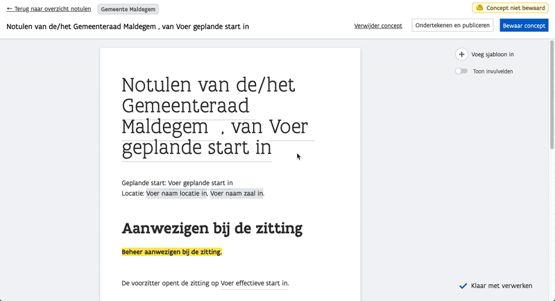
-
Start & einde van de zitting
Wanneer de zitting start, vult u de effectieve start in. Deze datum wordt gebruikt om bij te houden wanneer de besluiten in de notulen genomen werden. Aan het einde van de zitting kan u het einde invullen.
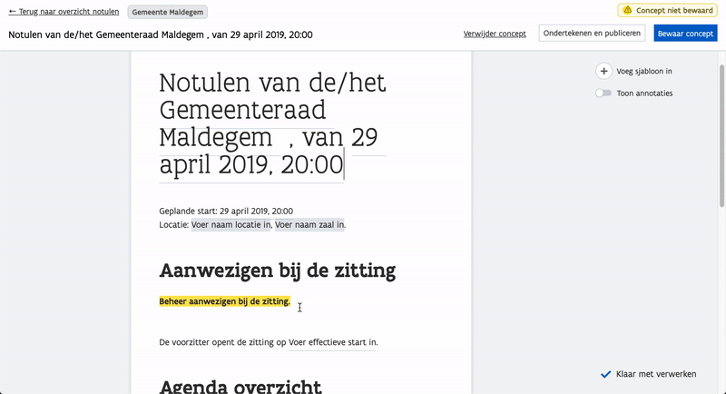
-
Annotaties bekijken
Klik op Toon invulvelden om te zien hoe de informatie in het document zit.
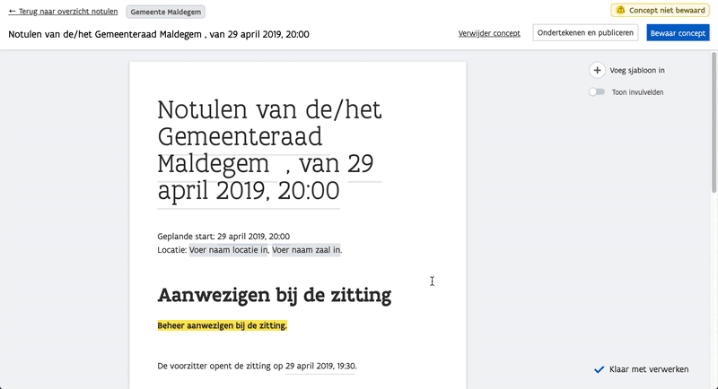
4.3 Plugin: agendapunten toevoegen, aanpassen en verwijderen
-
Agendapunten aanmaken
Na het invoegen van een sjabloon voor een zitting, krijgt u de mogelijkheid om agendapunten toe te voegen door op Beheer agenda te klikken. U krijgt een pop-up waarin u openbare en besloten agendapunten kan aanmaken. U kan dan de agendapunten invoegen.
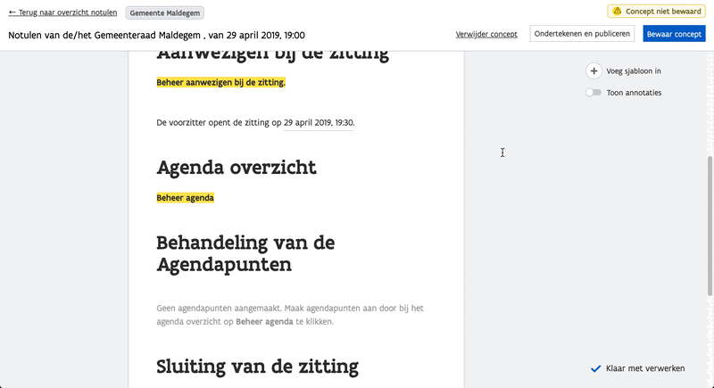
-
Agendapunten verplaatsen
U kan de positie van een agendapunt eenvoudig bepalen door ze vooraan, achteraan of na een bepaald agendapunt in te voegen. Nieuwe agendapunten worden automatisch achteraan bijgevoegd als u de positie niet bepaalt.
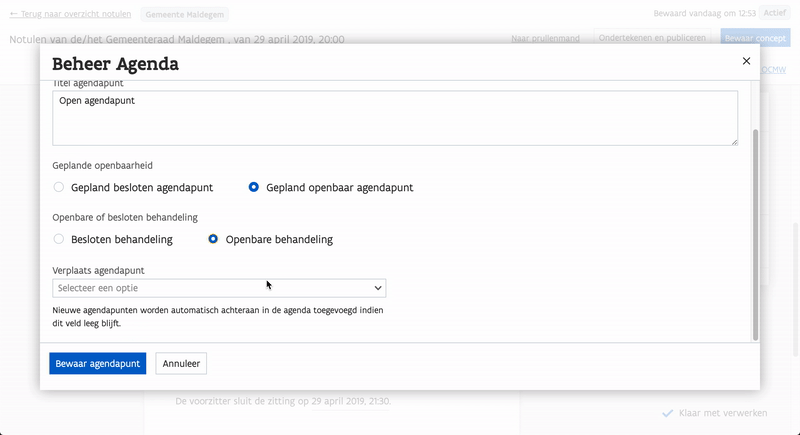
-
Behandeling van agendapunt
Eens u agendapunten aangemaakt heeft, verschijnt er automatisch ook een sjabloon voor de behandeling van het agendapunt. In het sjabloon staan drie verschillende gele markeringen die u helpen om de behandeling van het agendapunt te vervolledigen:
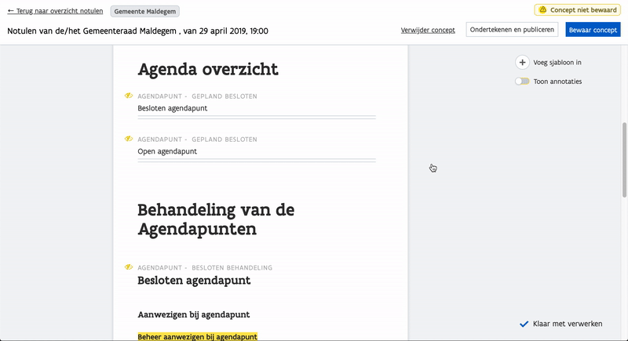
-
Agendapunten verwijderen
Agendapunten verwijderen uit de agenda kan steeds. U verwijdert hierbij niet enkel de inhoud van de agenda, maar u verwijdert ook de behandeling van het agendapunt uit de zitting.
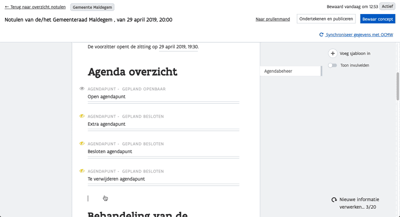
-
Agenda publiceren
Eens de agenda van voorontwerp naar agenda gaat, kan de agenda ondertekend en gepubliceerd worden. Later kan de aanvullende of spoedeisende agenda ook ondertekend en gepubliceerd worden. Lees hoe ondertekenen en publiceren werkt
4.4 Plugin: aanwezigen toevoegen
Aanwezigen bij de zitting
Eens de zitting gestart is, kunnen de aanwezigen aangeduid worden. Ook de voorzitter en de secretaris van de zitting kunnen aangeduid worden. Indien de algemeen directeur of voorzitter van de raad niet aanwezig is, kan er ook iemand anders aangeduid worden.
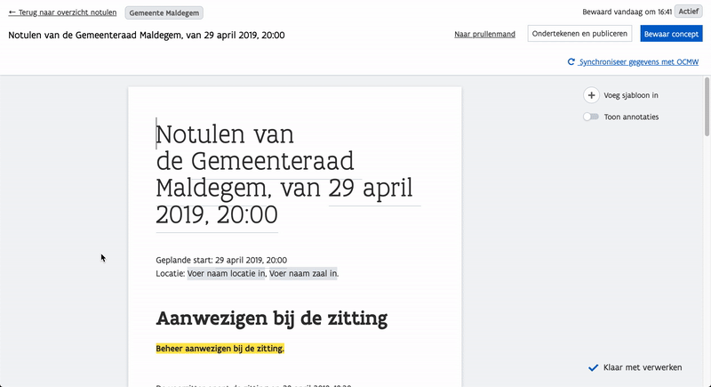
Aanwezigen bij een agendapunt
Bij elke behandeling van het agendapunt, kunnen de aan- en afwezigen aangeduid worden, samen met de voorzitter en secretaris van de zitting. Het eerste agendapunt neemt de aanwezigenlijst van de start van de zitting over, elk agendapunt daarna neemt de aanwezigenlijst van het vorige agendapunt over.
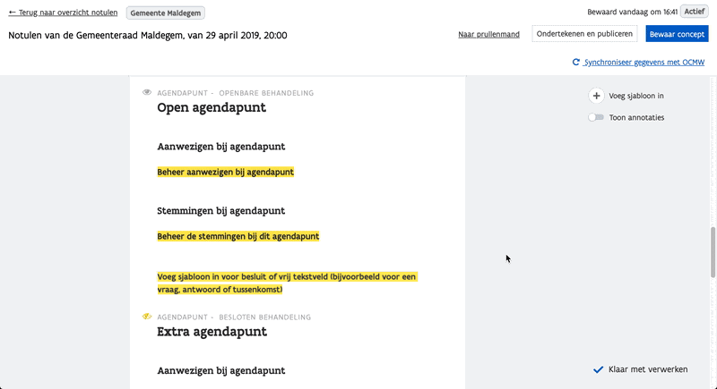
4.5 Plugin: een stemming invoegen
Bij sommige behandelingen van agendapunten zal u stemmingen nodig hebben. Eens u een agendapunt aangemaakt heeft, ziet u een gele markering met Beheer de stemmingen bij dit agendapunt staan. Klik erop om een stemming in te voegen.
Indien u geen stemming wil invoegen, kan u de tekst eenvoudigweg verwijderen uit de tekstverwerker.
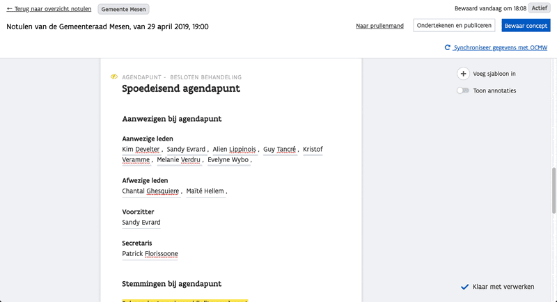
Onderwerp
Elke stemming heeft een onderwerp nodig, die beschrijft waarover de stemming gaat.
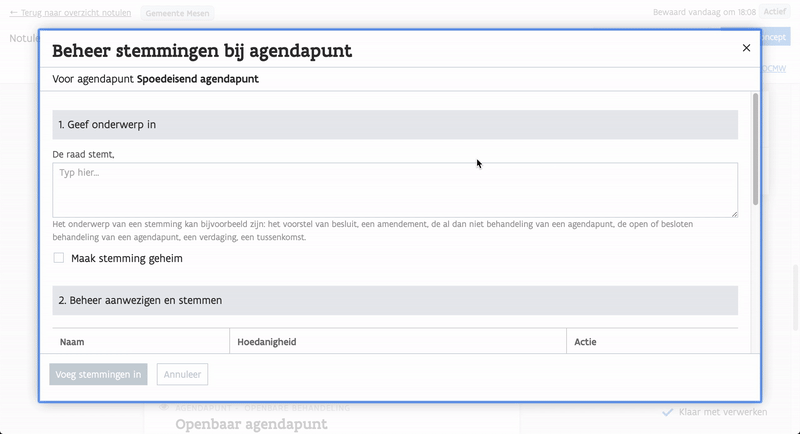
Aanwezigen
Bij elke stemming worden de aanwezigen van het agendapunt overgenomen. Indien u deze niet heeft ingevuld, worden ze niet overgenomen.
Openbare stemming
Indien u voor een openbare stemming heeft gekozen, kan u voor elke aanwezige een stem invoeren: voorstander, tegenstander of onthouder.
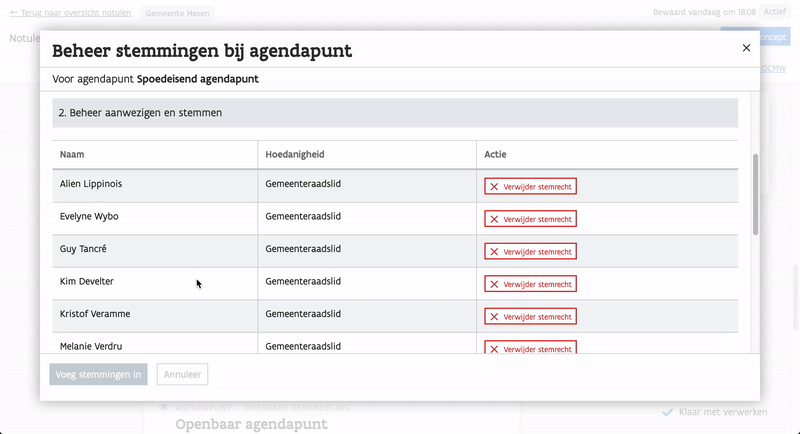
Geheime stemming
Indien u voor een geheime stemming heeft gekozen, geeft u de resultaten in per categorie: aantal voorstanders, tegenstanders en onthouders.
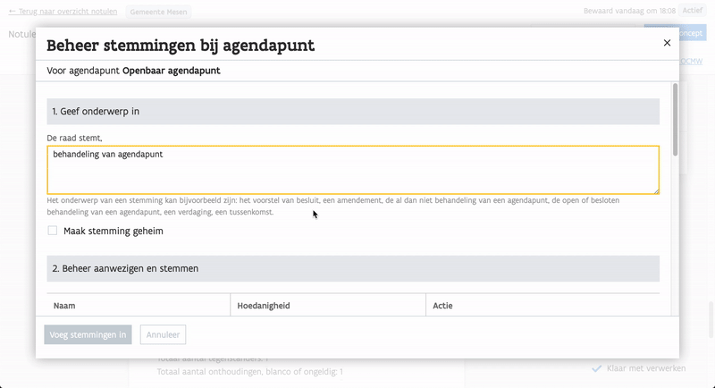
Gevolg invullen en stemming invoegen
Eens u de stemresultaten heeft ingevuld kan u het gevolg ingeven. Uw stemming is dan klaar om ingevoegd te worden.
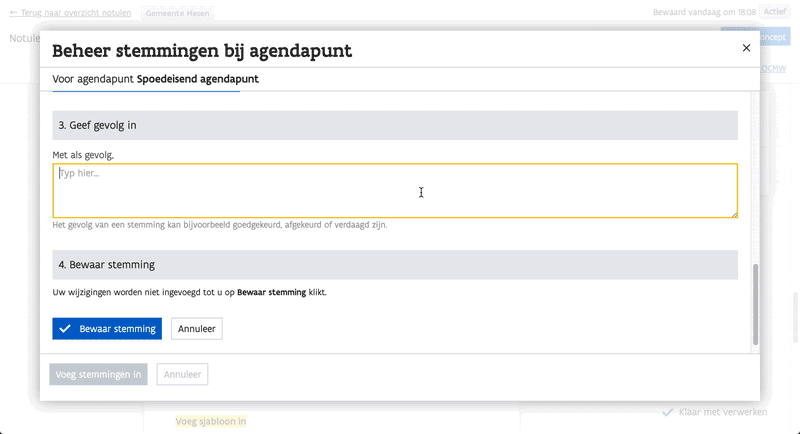
Bewerken
U kan een stemming eenvoudig bewerken door op de stemming zelf te klikken, en de plugin aan te roepen.
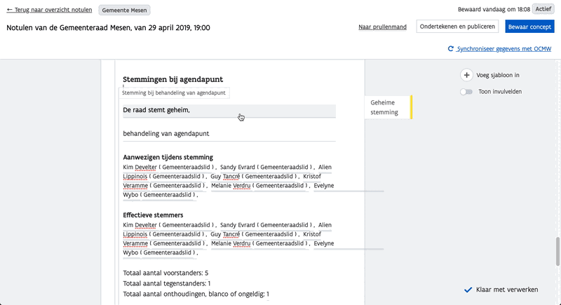
4.6 Plugin: besluiten invoegen en vervolledigen
U kan in de behandeling van een agendapunt een besluit of vrije tekst invoegen (voor bijvoorbeeld vragen of amendementen).
-
Besluiten in klassieke of nieuwe stijl invoegen
Door op Voeg sjabloon in voor besluit of vrij tekstveld (bijvoorbeeld voor een vraag, antwoord of tussenkomst) te klikken, lanceert u een plugin die u de mogelijkheid geeft om een besluit (in zowel de klassieke als de nieuwe stijl) in te voegen.
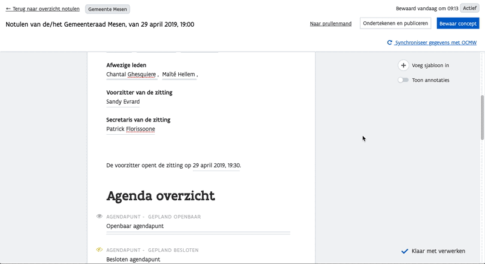
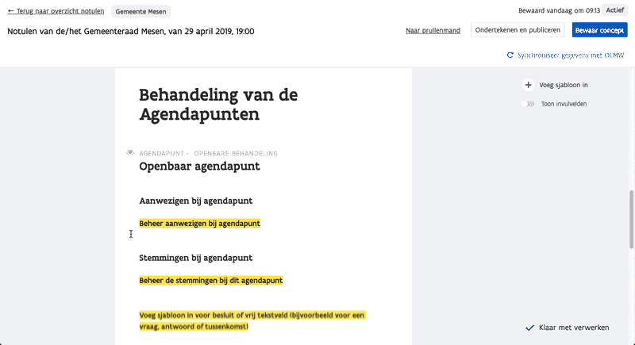
Een vrij tekstveld invoegen
U kan er ook voor kiezen om een vrij tekstveld in te voegen voor bijvoorbeeld een vraag, amendement, mededeling of tussenkomst.
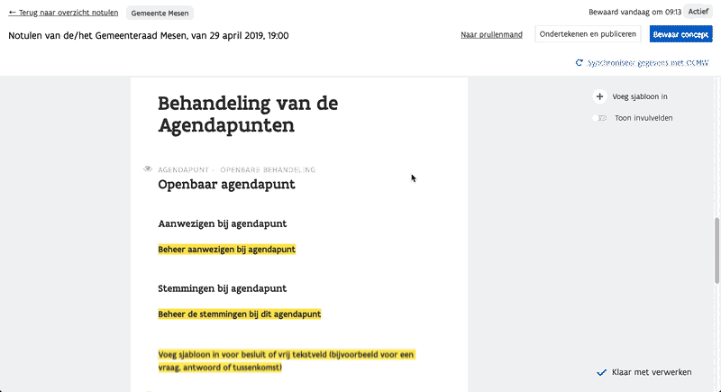
-
Een besluit invullen
Openbare titel, korte openbare beschrijving en citeeropschrift
Eens u een besluit heeft ingevoegd, krijgt u zowel bij de klassieke als de nieuwe stijl drie invulvelden te zien:
-
Openbare titel: deze titel wordt gebruikt in uw besluitenlijst en uittreksels
-
Korte openbare beschrijving: deze beschrijving wordt gebruikt in uw besluitenlijst en uittreksels
-
Citeeropschrift: dit opschrift wordt gebruikt om te refereren naar het besluit.
Deze stap is optioneel, en kan u verwijderen.
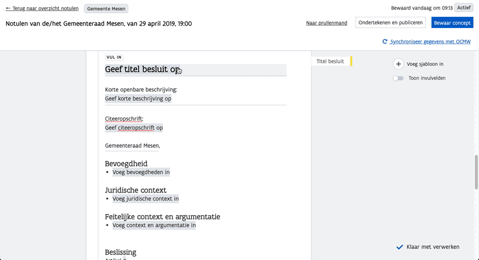
-
Bevoegdheden en juridische context, of "Gelet op"
U kan refereren naar de meest recente informatie van bijvoorbeeld de Vlaamse codex door decreet te typen, gevolgd door een zoekterm, bijvoorbeeld gemeentedecreet 2005.
Deze functionaliteit wordt binnenkort gebruiksvriendelijker gemaakt.
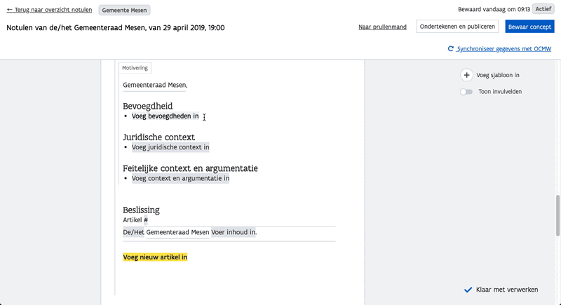
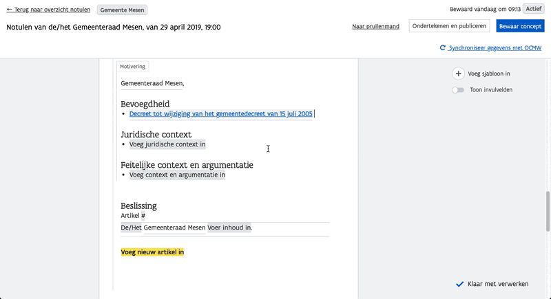
-
Feitelijke context en argumentatie
Zowel bij de klassieke als nieuwe stijl is er ruimte voorzien in de motivering voor feitelijke context en argumentatie.
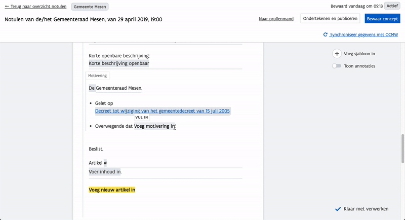
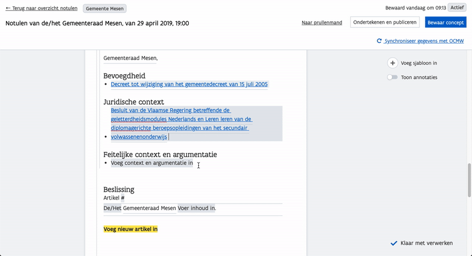
-
Beslissend gedeelte
U kan zo veel artikels invoegen als u wil. Geef een nummer en de tekst van het besluit in.
Voorbeeld: nieuwe stijl
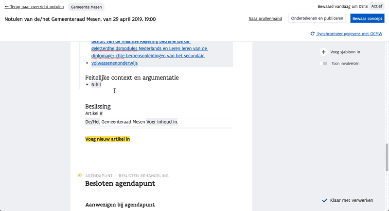
Voorbeeld: klassieke stijl
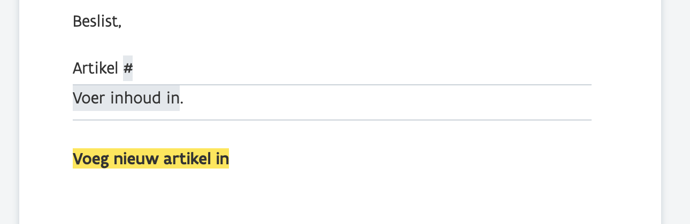
Ondertekenen, publiceren en printen
Wat ondertekenen en publiceren
U kan uw agenda, besluitenlijst, uittreksels en notulen ondertekenen en publiceren.
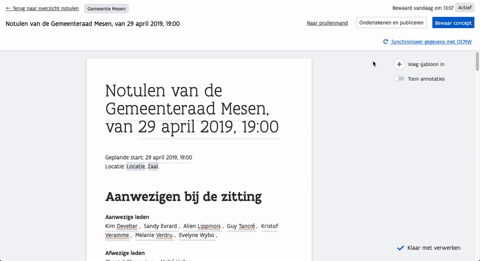
-
Agenda
U kan drie verschillende agenda's ondertekenen en publiceren:
- De ontwerpagenda
- De aanvullende agenda (optioneel)
- De spoedeisende agenda (optioneel)
Eens de ontwerpagenda ondertekend is, wordt het document opgeslagen op de blockchain en onveranderlijk opgeslagen. De tweede handtekening en publicatie zullen dus met dezelfde inhoud van dat document gebeuren. U kan wel nog de aangepaste aanvullende of spoedeisende agenda ondertekenen en publiceren.
-
Besluitenlijst
In de besluitenlijst worden enkel besluiten met hun opschrift, de korte inhoud en de beslissing opgenomen. Vragen en antwoorden worden niet opgepikt.
-
Uittreksels
U kan uittreksels apart ondertekenen en publiceren. U krijgt ook de mogelijkheid om te printen.
-
Notulen
U kan ook de gehele notulen ondertekenen en publiceren.
Vanaf mei 2019 zal u kunnen beslissen welke agendapunten publiek worden gemaakt en welke niet.
Nakijken
Voor u ondertekent of publiceert, kijk het document goed na. Eens er één handtekening staat, wordt het document onveranderlijk opgeslagen en wordt er een referentie op onze blockchain gezet om de informatie veilig te bewaren. Publicaties blijven ook publiek, en kunnen niet teruggeroepen worden. Zorg dat de inhoud correct is, en de annotaties ook reflecteren wat u in de tekstverwerker heeft ingegeven. Op deze manier stromen de gegevens ook correct door naar derde partijen zoals burgers of de toezichthoudende overheid
Later zal u kunnen herpubliceren moest u een fout ontdekken — maar ook de foutieve versie blijft steeds bestaan om een spoor te bewaren en de documenten te authenticeren.
Voorbeeld: een agenda inhoudelijk nakijken
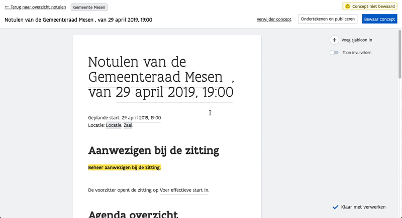
Voorbeeld: annotaties van een agenda nakijken

Ondertekenen
Een document kan twee maal ondertekend worden. Enkel bevoegde personen kunnen dit document ondertekenen, en moeten de rol ondertekenaar gekregen hebben. Meer informatie over deze rol vindt u onder gebruikersbeheer.
Hoe gaat het in zijn werk?
Uw documenten blijven online authentiek en veilig bewaard.
- Enkel personen met de juiste bevoegdheid kunnen documenten ondertekenen.
- documenten worden online getekend en verzegeld;
- documenten kunnen gevalideerd worden op echtheid.
Proces
U krijgt telkens een voorbeeld te zien van wat u gaat ondertekenen. Het document krijgt drie gegevens mee:
- De naam van de ondertekenaar
- Het moment waarop het document ondertekend werd
- De hash: Bij het ondertekenen van een document, wordt ook de inhoud van het document omgezet in een unieke code of hash. Deze hash wordt bij elke versie van het document op het internet gevoegd, èn veilig bijgehouden op onze blockchain. Zo kunnen we te allen tijde de echtheid van het document bevestigen.
Voorbeeld: een agenda ondertekenen
Eens de ontwerpagenda volledig is, kan u de ontwerpagenda ondertekenen.
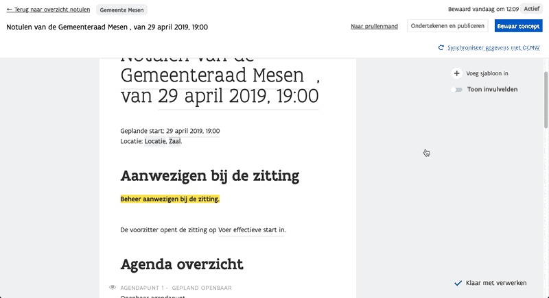
De ondertekenende documenten worden opgeslagen op de blockchain om de echtheid van het document te kunnen verifiëren.
Opgelet, ondertekenen is onveranderlijk bewaren
Per ondertekening, kan het document niet meer aangepast worden. Een ondertekende besluitenlijst kan dus niet meer gewijzigd worden — de ondertekening of publicatie hierna gebeurd dus op hetzelfde ongewijzigde document. In het geval van de agenda kan u wel nog een aanvullende of spoedeisende agenda ondertekenen en publiceren.
Publiceren
U kan uw ontwerpagenda, aanvullende agenda, spoedeisende agenda, besluitenlijst, uittreksels en notulen éénmaal publiceren. Enkel bevoegde personen kunnen dit document publiceren, en moeten de rol publiceerder gekregen hebben. Meer informatie over deze rol vindt u onder gebruikersbeheer.
Er wordt telkens een voorbeeld getoond van wat u exact gaat publiceren. U beslist zelf wanneer dat gebeurt, de tekstverwerker Gelinkt Notuleren legt hier niets op.
Waarom publiceren
- Stel essentiële informatie ter beschikking voor de leden van uw bestuur;
- breng toezichthoudende overheden op de hoogte en voldoe aan de publicatieplicht met de druk van een knop;
- geef burgers eenvoudig toegang tot publieke informatie.
Het proces
U krijgt telkens een voorbeeld te zien van wat u gaat publiceren, en waar de publicatie terecht komt.
Het gepubliceerd document krijgt drie gegevens mee:
- De naam van de publiceerder
- Het moment waarop het document gepubliceerd werd
- De hash: Bij het publiceren van een document, wordt ook de inhoud van het document omgezet in een unieke code of hash. Deze hash wordt bij elke versie van het document op het internet gevoegd, èn veilig bijgehouden op onze blockchain. Zo kunnen we te allen tijde de echtheid van het document bevestigen.
Opgelet, publiceren is onomkeerbaar
Eens gepubliceerd, kan het document niet meer aangepast worden. Een gepubliceerde besluitenlijst kan dus niet meer gewijzigd worden.
Voorbeeld: een agenda publiceren
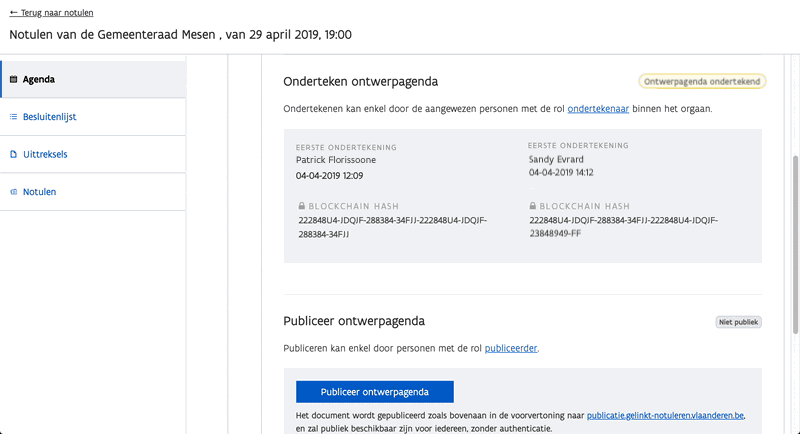
De gepubliceerde documenten worden opgeslagen op de blockchain om de echtheid van het document te kunnen verifiëren. Publiceren zorgt er ook voor dat het document publiek beschikbaar is, voor bijvoorbeeld burgers of de toezichthoudende overheid.
Publicatie bekijken
Eens u het document gepubliceerd heeft, is het beschikbaar op publicatie.gelinkt-notuleren.vlaanderen.be. U kan per zitting bekijken welke documenten gepubliceerd werden.
Voorbeeld: gepubliceerde agenda
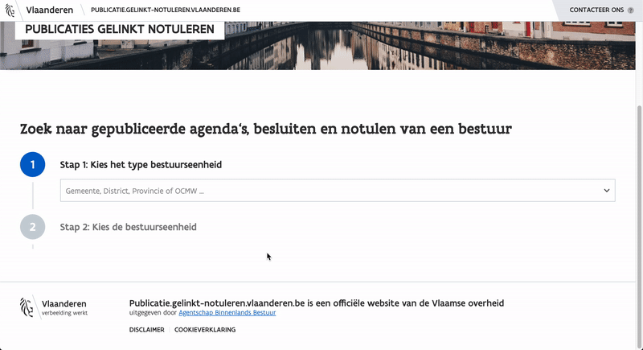
Uittreksels printen of opslaan als PDF
U kan uittreksels ook apart printen. Het uittreksel dient ondertekend te zijn voor u kan printen. Klik bij het gewenste besluit op Printen. Vervolgens opent het uittreksel zich. U kan dit uittreksel printen of opslaan als PDF, zie Documenten printen of opslaan als PDF vanuit de browser.
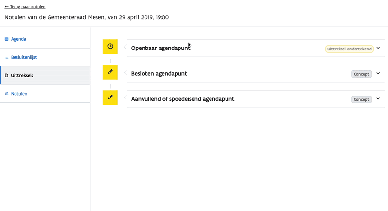
Documenten printen of opslaan als PDF vanuit de browser
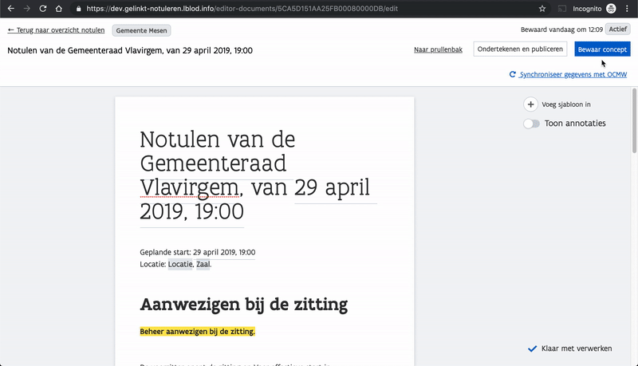
Een PDF of print maken in Firefox
Een PDF of print maken in Chrome
-
Open de notulen die u wil printen of opslaan, laat de pagina printen.
Optie 1: via het menu.
Ga naar het dropdown menu of bestand en kies Print.
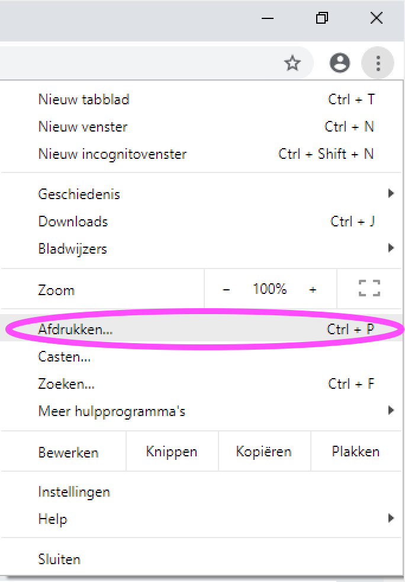
Optie 2: toetsencombinatie
Klik naast het witte tekstverwerker vlak, zodat u niet meer aan het editeren bent. Hou vervolgens op uw toetsenbord tegelijkertijd ctrl en p in.

-
Een PDF of een print maken.
Printen
Er opent een venster of pop-up. Er verschijnt een voorvertoning van uw print. Kies de juiste printer en klik op OK.

Een PDF maken
Kies PDF en klik op OK.
Mandatenbeheer
Deze functionaliteit is later beschikbaar.
Vul automatisch de mandatendatabank aan bij het publiceren van uw notulen. De mandaten worden gepubliceerd op https://loket.lokaalbestuur.vlaanderen.be voor de Vlaamse Overheid en aangevuld op http://mandaten.lokaalbestuur.vlaanderen.be voor de burgers.
Website mandatenbeheer

Website mandatendatabank

- De tekstverwerker herkent automatisch de juiste mandatarissen in uw besluiten;
- maak gebruik van sjablonen voor het wijzigen van mandaten;
- wijzigingen in mandaten worden bij publicatie automatisch up-to-date gebracht in de mandatendatabank.
Installatievergadering
Draaiboek installatievergadering
VVSG heeft voor deze speciale gelegenheid een draaiboek gemaakt. Op deze link vindt u de laatste versie van het draaiboek terug, samen met andere informatie: http://www.vvsg.be/verkiezingen/Pages/default.aspx. Dit draaiboek zal u helpen om de installatie vlot te laten verlopen.
Ook voor de politieraad is er meer informatie beschikbaar: http://www.vvsg.be/veiligheid/lokalepolitie/verkiezingen/Pages/default.aspx.
Takenlijsten installatievergadering
Eens u het sjabloon "Installatievergadering" invoegt, verschijnt er een takenlijst aan de linkerkant die u helpt voor en tijdens de zitting. Deze takenlijst is gebaseerd op het draaiboek van de VVSG.

De takenlijst helpt u om het sjabloon te vervolledigen en de installatievergadering te voltooien.

Klik op de titels om de taken te bekijken, en vink het selectievakje aan eens u de taak heeft vervolledigd.

Gegevens tussen de installatievergadering van de gemeenteraad en de eerste zitting van de OCMW-raad synchroniseren
Het is mogelijk om informatie van de installatievergadering door te laten stromen naar de eerste vergadering van de OCMW-raad. In agendapunt 5 van de ocmw-raad zal u deze gegevens nodig hebben. U doet dit als volgt:
-
Vervolledig agendapunt 3 in de installatievergadering van de gemeenteraad, en bewaar.
Hierna verschijnt er een knop bovenaan rechts "Synchroniseer gegevens met OCMW"
-
Klik op de knop bovenaan rechts "Synchroniseer gegevens met OCMW"
Een modal verschijnt die kadert hoe het werkt.
-
Klik op de knop "Synchroniseer gegevens" onderaan in de modal
De gegevens zijn nu klaar voor hergebruik.
-
Ga terug naar het overzicht, en meld u af.
-
-
Maak een nieuw document, en kies het sjabloon "Eerste vergadering OCMW-raad" (oude of nieuwe stijl)
De gegevens van de installatievergadering van de gemeenteraad zijn nu beschikbaar in de editor.
-
Indien u wijzigingen heeft aangebracht in agendapunt 3 in tussentijd, dient u opnieuw te synchroniseren in het sjabloon van de OCMW-raad.
- Doorloop de stappen van 1 tot 5 van deze handleiding.
- Ga naar agendapunt 5, klik op uw tabel en klik daarna op Syncrhoniseer tabel met installatie gemeenteraad. Opgelet, dit overschrijft de huidige tabel.
Bij problemen of onduidelijkheden:
Indien u de melding krijgt dat er geen OCMW-raadsleden beschikbaar zijn in agendapunt 5, of u krijgt de mogelijkheid niet om het scenario te selecteren; bekijk dan een van de volgende scenario's:
- Bestuurseenheid: u moet ingelogd zijn als OCMW-raad. Indien niet, meld u af in het overzicht (stap 4), en meld u weer aan als OCMW (stap 5).
- Agendapunt 3 werd niet vervolledigd: meld u aan als gemeenteraad, en kijk na of agendapunt 3 in de installatievergadering vervolledigd en bewaard werd. Kijk vooral naar het besluit.
- U heeft een ander bestuursorgaan geselecteerd: Kies voor "Raad voor Maatschappelijk Welzijn Aalst — Vanaf 01/01/2019" in de titel.
- U heeft een andere bestuursperiode geselecteerd: Kies voor "Raad voor Maatschappelijk Welzijn Aalst — Vanaf 01/01/2019" in de titel.
Neem contact met ons op indien deze scenario's uw probleem niet oplossen.
Gebruikersbeheer
Om toegang te krijgen tot Gelinkt Notuleren, moet u de nodige toegangsrechten gekregen hebben via het gebruikers- en toegangsbeheer. Dit gebeurt door de lokale beheerder die in elk bestuur aanwezig is. Meestal is dit de secretaris/algemeen directeur, griffier of iemand die door de organisatie werd aangeduid. U gaat dus best bij hen ten rade als u niet weet wie uw lokale beheerder is.
Aanmelden en navigeren
Om als lokale beheerder rechten toe te kennen aan gebruikers, surft u naar https://vo-gebruikersbeheer.vlaanderen.be. Meld u aan met uw favoriete aanmeldingssysteem.

Kies vervolgens de juiste doelgroep, en het bestuur waar u zich voor wil aanmelden.

Klik op 'snel rechten toekennen', om te starten.

Zoeken naar de juiste persoon
U krijgt een overzicht te zien, waar u kan zoeken naar de juiste persoon.


Zoeken naar de juiste rechten
Vervolgens kan u voor de geselecteerde persoon de juiste rechten zoeken. Zoek naar "Gelinkt Notuleren".


Rechten toekennen
Klik op "Gelinkt Notuleren" om rechten toe te kennen. Dit gebeurt op basis van context (niet meer op basis van rol zoals vroeger).
U kan een gebruiker tot bepaalde onderdelen van de applicatie toegang verlenen of ontkennen aan de hand van die contexten. Eens een gebruiker toegang heeft tot een bepaalde context, kan deze gebruiker alle acties uitvoeren voor de bijbehorende onderdelen. Een gebruiker kan rechten krijgen voor meerdere contexten.

Er zijn 4 profielen voor deze applicatie:
-
Schrijver
Rol: opmaken van de notulen.
-
Ondertekenaar
Rol: voorbehouden voor wie de notulen mag ondertekenen. Dat zal dus in de meeste gevallen de algemeen directeur zijn en de burgemeester of voorzitter van de gemeenteraad.
-
Publiceerder
Rol: publicatie van de agenda, de besluitenlijst, de notulen (openbaar gemaakt).
-
Sjablonen valideerder
Het is op termijn ook mogelijk om eigen sjablonen aan te maken, wie die context heeft zal die kunnen aanmaken.

Geef ook een reden op om het recht toe te kennen.
Voltooien
U wordt gevraagd om het toekennen van rechten te bevestigen, waarna een boodschap verschijnt indien het proces met succes voltooid werd.


Probleem
Indien er zich een probleem voordoet, neem contact op met het gebruikersbeheer Vlaanderen.
Staan er fouten in deze handleiding? Neem contact op met GelinktNotuleren@vlaanderen.be.